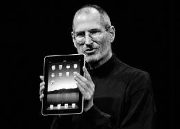

iPad
Post-PC Dönemine Giriş

iPad’le, 2010
Devrim İstediğini Söylüyorsun
Jobs 2002’de, kullanıcıların ekrana stilus veya kalem kullanarak veri girmelerini sağlayan bir tablet bilgisayar yazılımı geliştirdiğini söyleyen ve bu yazılımı övüp duran Microsoft mühendisine sinirlenmişti. O yıl birkaç üretici piyasaya o yazılımı kullandıkları tablet PC’ler sürmüş, ancak hiçbiri tutmamıştı. Jobs bu işin doğru dürüst nasıl yapılacağını –kalemsiz!– göstermek istiyordu, ama Apple’ın geliştirdiği çoklu dokunmatik teknolojisini görünce bunu önce iPhone’da kullanmak istemişti.
Bu arada Macintosh donanım ekibi tablet fikrini konuşuyordu. “Tablet üretme planımız yok,” dedi Jobs, Mayıs 2003’te Walt Mossberg’e verdiği bir röportajda. “İnsanlar klavye istiyormuş meğer. Tabletler zaten başka PC’lere ve aygıtlara sahip olan zengin adamlara hitap ediyor.” Kendisinde “hormon dengesizliği” olduğu açıklaması gibi bu da yanıltıcıydı; her yıl en önde gelen 100 çalışanıyla birlikte çıktığı tatilde konuşulan müstakbel projeler arasında tablet de vardı. “Bu tatillerin çoğunda bu projeden bahsettik, çünkü Steve tablet üretme arzusunu asla yitirmedi,” diye anımsıyordu Phil Schiller.
2007’de Jobs, düşük maliyetli bir netbook bilgisayar projesi için fikirleri değerlendirirken, tablet projesinde büyük bir aşama kaydedildi. Bir pazartesi günü yönetici kadro beyin fırtınası yaparken Ive neden klavyenin ekrana menteşelerle tutturulması gerektiğini sordu; bu hem pahalıya gelirdi, hem de cihazın büyüklüğünü arttırırdı. Çoklu dokunmatik bir arayüz kullanarak klavyeyi ekrana koyun, diye önerdi. Jobs hemfikir oldu. Dolayısıyla bir netbook tasarlamak yerine, tablet projesini hızlandırmakta odaklanıldı.
Süreç Jobs’la Ive’ın uygun ekran boyutunu belirlemeleriyle başladı. Boyutları ve en-boy oranları birbirinden biraz farklı yirmi model yaptırdılar –hepsi de yuvarlak köşeli dörtgenlerdiler elbette. Ive tasarım stüdyosunda hepsini bir masaya dizdi; öğleden sonraları, onları örten kadife kumaşı kaldırıp hepsiyle oynuyorlardı. “Ekran boyutunu böyle belirledik,” dedi Ive.
Jobs olabilecek en arı sadeliği hedefliyordu her zamanki gibi. Bunun için aygıtın en önemli parçasının ne olduğunu belirlemek gerekiyordu. Yanıt görüntü ekranıydı. Yani her şeyi ekrana göre ayarlamalıydılar. “Bir sürü özelliğin ve tuşun dikkatin ekrana yönelmesini engellememesini nasıl sağlayabiliriz?” diye sordu Ive. Jobs her adımda bir şeyleri elemeye ve sadeleştirmeye çalışıyordu.
Bir ara modele karşı hafif bir tatminsizlik duydu. Ona yeterince konforlu ve dostane gelmiyordu, insanda alıp götürme hissi uyandırmıyordu. Ive meseleye parmak bastı: Cihazı tek elinizle, içgüdüsel olarak kapıp götürebileceğiniz sinyalini vermeliydiler. Arkası hafif bombeli olmalıydı, böylece cihazı dikkatle kaldırmak yerine kolayca kapabilmeliydiniz. Yani mühendislik bölümünün gerekli bağlantı portlarını ve tuşları kolay kullanılır şekilde tasarlaması gerekiyordu.
Patent başvurularını takip ediyor olsaydınız –Apple’ın Mart 2004’te başvurusunu yaptığı ve on dört ay sonra verilen– D504889 numaralı patent dikkatinizi çekerdi. Mucitlerin arasında Jobs’la Ive’ın isimleri vardı. Bu başvuruda yuvarlak kenarlı –tam da sonradan iPad’in olduğu gibi–, dörtgen bir elektronik tabletin çizimleri bulunuyordu ve bunlardan bir tanesinde bir adam tableti sol eliyle rahatça tutarken sağ işaret parmağıyla ekrana dokunuyordu.
Macintosh bilgisayarlar artık Intel çipleri kullandıklarından, Jobs başta iPad’de Intel’in geliştirdiği düşük voltajlı Atom çipini kullanmayı planladı. Intel’in CEO’su Paul Otellini, birlikte bir tasarım üstünde çalışmaları için epey baskı yapıyordu ve Jobs ona güvenmeye meyilliydi. Otellini’nin şirketi dünyanın en hızlı işlemcilerini üretiyordu. Ancak Intel, batarya ömrünü korumak gibi bir önceliği olmayan, duvar prizlerine bağlanan makineler için işlemci üretmeye alışıktı. Dolayısıyla Tony Fadell canla başla, daha basit olan ve daha az güç harcayan ARM mimarisine dayalı bir şey kullanmalarını savunuyordu. Apple başta ARM ile ortaklık yapmıştı ve orijinal iPhone’da onun mimarisini kullanan çipler vardı. Diğer mühendislerden destek alan Fadell, Jobs’a karşı çıkıp fikrini değiştirmenin mümkün olduğunu kanıtladı. “Yanlış, yanlış, yanlış!” diye bağırdı Fadell bir toplantıda, Jobs en iyisinin Intel’in iyi bir mobil çipi üreteceğine güvenmek olduğunu söyleyince. Fadell Apple rozetini masaya koyup istifa tehdidinde bulunacak kadar ileri gitti.
Jobs sonunda pes etti. “Seni duyuyorum,” dedi. “En iyi adamlarıma karşı gelecek değilim.” Hatta abartıp, diğer uca kaydı. Apple ARM mimarisinin lisansını aldı; ama aynı zamanda Palo Alto’da bulunan, P.A. Semi adlı, 150 kişilik bir mikroişlemci tasarım firmasını da satın aldı ve firmanın ARM mimarisine dayalı, Güney Kore’de Samsung tarafından üretilen A4 adlı bir çip sistemini yaratmasını sağladı. Jobs şöyle anımsıyordu:
Yüksek performansta Intel en iyisidir. Enerji ve maliyetle ilgilenmiyorsan, en hızlı çipi onlar üretiyor. Ama tek bir çipin işlemcisini üretiyorlar sadece, yani başka bir sürü parça gerekiyor. Bizim A4’te işlemci ve grafik çekirdeği, mobil işletim sistemi ve bellek kontrolü var; hepsi de çipin içinde. Intel’e yardım etmeye çalıştık, ama bize pek kulak asmadılar. Grafik çekirdeklerinin berbat olduğunu yıllardır söylüyoruz onlara. Her çeyrekte ben ve en üst düzey üç yöneticim, Paul Otellini’yle toplantı yapıyoruz. Başta birlikte muhteşem işler yapıyorduk. Gelecekteki iPhone’ların çiplerini üretmek için büyük bir ortak proje başlatmamızı istiyorlardı. Bunu iki sebepten dolayı kabul etmedik. Birincisi cidden çok yavaşlar. Buharlı gemiler gibiler, pek esnek değiller. Biz çok hızlı çalışmaya alışığız. İkincisi onlara her şeyi öğretmek istemedik, sonra gidip de rakiplerimize satmasınlar diye.
Otellini’ye göre iPad’de Intel çiplerinin kullanılması mantıklı olurdu. Asıl meselenin Apple’la Intel’in fiyatta anlaşamamaları olduğunu söyledi. “Temelde para meselesi yüzünden olmadı,” dedi. Bu aynı zamanda Jobs’ın bir ürünün baştan sona her yönünü kontrol etme arzusunun, hatta takıntısının bir başka örneğiydi.
Tanıtım, Ocak 2010
Jobs’ın ürün tanıtımları öncesinde uyandırmayı başardığı olağan heyecan, 27 Ocak 2010’da San Francisco’daki Yerba Buena oditoryumunda yapılacak iPad tanıtımının yol açtığı heyecanın yanında solda sıfır kaldı. Economist onu kapak yaptı; kapakta Jobs cübbeli ve haleliydi ve elinde “İsa Tableti” lakaplı cihazı tutuyordu. Wall Street Journal da övücü sözler söyledi: “Bu kadar heyecan uyandıran son tabletin üstünde bazı emirler vardı.”
Jobs tanıtımın tarihselliğini vurgulamak istercesine, eski Apple günlerinden kalma bir sürü iş arkadaşını davet etti. Daha da dokunaklısı, geçen sene ona karaciğer nakli yapmış olan James Eason’la 2004’te pankreas ameliyatını yapan Jeffrey Norton’ın seyircilerin arasında yer almalarıydı; Jobs’ın karısı, oğlu ve kız kardeşi Mona Simpson’la aynı sırada oturuyorlardı.
Jobs, üç yıl önceki iPhone gibi, bu yeni cihazın öyküsünü de bir akışa oturttu ustaca. Bu sefer ekranda bir iPhone’la bir dizüstü bilgisayar vardı ve aralarında bir soru işareti duruyordu. “Mesele şu ki, ikisinin ortasında bir şeye yer var mı?” diye sordu. Bu “şeyin” internette gezinmekte, e-postada, fotoğraflarda, videolarda, müzikte, oyunlarda ve e-kitaplarda iyi olması gerekiyordu. “Netbook” konseptinin kalbine kazık sapladı. “Netbooklar hiçbir şeyde daha iyi değiller!” dedi. Davetli konuklar ve şirket çalışanları tezahürat yaptılar. “Ama bizde daha iyi olan bir şey var. Ona iPad diyoruz.”
Jobs iPad’in ne kadar rahat kullanılabildiğini göstermek için sahnedeki konforlu deri koltuğa ve sehpaya gitti (aslında bir Le Corbusier koltuk ve Eero Saarinen sehpa seçmişti) ve eline bir iPad aldı. “Dizüstü bilgisayardan çok daha fazla yakınlık kuracağınız bir cihaz,” dedi hevesle. New York Times’ın internet sitesini açtı, Scott Forstall’la Phil Schiller’a e-posta gönderdi (“Vay canına, iPad’i gerçekten tanıtıyoruz”), bir fotoğraf albümünde gezindi, takvimi kullandı, Google Maps’ten Eyfel Kulesi’ne zum yaptı, video klipler seyretti (Uzay Yolu ve Pixar’ın Yukarı Bak’ı), iBook kitap rafını gösterdi ve bir şarkı çaldı (Bob Dylan’ın “Like a Rolling Stone”unu ki, bunu iPhone’un tanıtımında da çalmıştı). “Muhteşem, değil mi?” diye sordu.
Jobs son slaytında, hayatının iPad’de somutlaşan temalarından birini vurguladı: Teknoloji Sokağı’yla Liberal Sanatlar Sokağı’nın kavşağındaki bir tabela. “Apple iPad gibi ürünler yaratabiliyor,” dedi son olarak, “çünkü biz teknolojiyle liberal sanatların kesiştiği noktada bulunmaya çalıştık hep”. iPad, Bütün Dünya Kataloğu’nun dijital reenkarnasyonuydu, yaratıcılığın yaşamı kolaylaştıran aletlerle buluştuğu yerdi.
Bu kez ilk tepki Yaşasın Korosu olmadı. iPad henüz satışa sunulmamıştı (satışı Nisan’da başlayacaktı) ve Jobs’ın demosunu izleyenlerden bazıları cihazın ne olduğundan emin değildiler. iPhone’un geliştirilmiş hali miydi? “Snooki’nin The Situation’la birlikte olmasından beri[37] bu kadar büyük bir hayal kırıklığı yaşamamıştım,” diye yazdı Newsweek’ten Daniel Lyons (bir internet parodisinde “Sahte Steve Jobs” rolüne soyunmuştu). Gizmodo’daysa “iPad’in Sekiz Berbat Yönü” adlı bir yazı yayımlandı (çokgörevliliği yoktu, kamerası yoktu, Flash’ı yoktu...). Blogosferde cihazın ismiyle bile dalga geçildi; kadın hijyen ürünlerine ve maxi pedlere alaycı göndermeler yapıldı. O gün Twitter’da “#iTampon” hash tagi, en çok bahsedilen konular arasında üç numarada yer aldı.
Bill Gates de her zamanki gibi cihazı kötüledi. “Ben hâlâ ses, kalem ve gerçek bir klavyeyle kullanılan cihazların –yani netbookların– popüler olacağını düşünüyorum,” dedi Brent Schlender’a. “iPhone çıktığında, ‘Aman Tanrı’m, Microsoft yeterince yükseği hedeflememiş,’ demiştim, ama bu sefer öyle değil. iPad kitap okumak için iyi, ama ‘bunu ah, keşke Microsoft yapsaydı,’ dedirten bir özelliği yok.” Microsoft’un kalemle veri girme yaklaşımının başarılı olacağında diretmeyi sürdürdü. “Ben kalemli bir tabletin başarılı olacağını yıllardır söylüyorum,” dedi bana. “Sonunda ya haklı olacağım, ya da ölü.”
Jobs ürünü tanıttıktan sonraki gece sinirli ve depresifti. Mutfağında akşam yemeği için toplandığımızda masanın etrafında turlayıp iPhone’undan e-postalara ve internet sayfalarına baktı.
Son 24 saatte 800 civarı e-posta aldım. Çoğu şikayetçi. USB kablosu yokmuş! O yokmuş, bu yokmuş. Bazıları küfür ediyorlar ve “Bunu nasıl yaparsın?” diyorlar. Normalde insanlara yanıt yazmam, ama “Annen baban bu halinle gurur duyuyordur,” diye karşılık verdim. Bazıları da iPad ismini sevmemiş falan filan. Bugün biraz moralim bozuldu. İnsanın şevki kırılıyor.
O gün kendisini arayıp kutlayan biri oldu: Genelkurmay Başkanı Rahm Emanuel. Jobs bunu takdir etti. Ardından akşam yemeğinde, Başkan Obama’nın göreve başladığından beri kendisini hiç aramadığını söyledi.
iPad Nisan’da satılmaya başlanıp insanların bizzat eline geçince, eleştiriler azaldı. Time ve Newsweek cihazı kapak yaptılar. “Apple ürünleriyle ilgili yazmanın zor tarafı şu ki, epey ses getiriyorlar,” diye yazdı Lev Grossman, Time’da. “Apple ürünleriyle ilgili yazmanın diğer zorluğuysa, söylenenlerin bazen doğru olması.” Temel itirazında haklıydı: “Tüketici içeriği açısından hoş bir cihaz olsa da, yaratılmasını mazur gösterecek çok sebep yok.” Bilgisayarlar, özellikle de Macintosh, insanların tüm dünyaya sunabilecekleri müzik, video, internet sitesi ve bloglar oluşturmalarını sağlayan aletler haline gelmişti. “iPad’se vurguyu içerik yaratımından uzaklaştırıp, içeriği sadece alıp manipüle etmeye kaydırıyor. Sizi susturuyor; sizin başka insanların başyapıtlarını tüketen, pasif bir tüketici olmaya geri dönmenize yol açıyor.” Jobs bu eleştiriyi oldukça önemsedi. iPad’in bir sonraki versiyonuna, kullanıcının sanatsal yaratımını kolaylaştırmanın yollarını eklemek için harekete geçti.
Newsweek’in kapak manşeti, “iPad’in Nesi O Kadar Muhteşem? Her Şeyi” idi. Cihazın tanıtımından sonra “Snooki” göndermesiyle eleştiride bulunan Daniel Lyons fikrini değiştirmişti. “Jobs’ın demosunu izlerken bana önemli bir şey değil gibi gelmişti,” diye yazdı. “Sonuçta iPod Touch’ın büyük bir versiyonu, değil mi? Sonra iPad’i kullanma fırsatını bulunca şunu fark ettim: Bundan bir tane istiyorum.” Başkaları gibi Lyons da bunun Jobs’ın kişisel projesi olduğunu, savunduğu her şeyin cismanileşmiş hali olduğunu fark etmişti. “Jobs’ın şöyle tuhaf bir yeteneği var: İhtiyacımız olduğunu bilmediğimiz cihazlar üretiyor ve sonra birden onlarsız yaşayamaz hale geliyoruz,” diye yazdı. “Kapalı bir sistem, Apple’ın ünlü tekno-Zen deneyimini sunmanın tek yolu olabilir.”
iPad konusundaki tartışmaların çoğu kapalı, uçtan uca entegrasyonunun başarısızlığa mahkûm bir yöntem olup olmadığı üstüneydi. Google herkese açık olan ve tüm donanım üreticileri tarafından kullanılabilen bir mobil platformu, Android’i sunmakla Microsoft’un 1980’lerde oynadığı role soyunmaya başlamıştı. Fortune sayfalarında bu konuyla ilgili bir tartışma düzenledi. “Kapalı olmanın bahanesi yok,” diye yazdı Michael Copeland. Ama meslektaşı Jon Fortt farklı düşünüyordu: “Kapalı sistemleri eleştiriliyorlar, fakat bu sistemler gayet güzel çalışıyor, ve kullanıcı dostular. Teknoloji dünyasında bunu Steve Jobs’tan daha iyi kanıtlayan yoktur sanırım. Apple donanımı, yazılımı ve servisleri paket halinde sunmakla ve yakından kontrol etmekle, rakiplerine sürekli fark atmayı ve piyasaya göz kamaştırıcı ürünler sürmeyi başarıyor.” iPad’in, orijinal Macintosh’tan sonra, bu konudaki en net test olacağında hemfikirdiler. “Apple A4 çipini kullanmakla kontrol manyaklığı şöhretinde seviye atladı,” diye yazdı Forrt. “Cupertino artık silikon, cihaz, işletim sistemi, App Store ve ödeme sistemi alanlarında mutlak kontrole sahip.”
Jobs, iPad’in piyasaya sürüldüğü 5 Nisan’da, öğlene az kala Palo Alto’daki Apple mağazasına gitti. Daniel Kottke oradaydı; Jobs’ın Reed’deki ve Apple’ın ilk zamanlarındaki LSD kullanan ruh ikizi –kurucu hisse opsiyonları meselesi yüzünden Jobs’a kin duymuyordu artık. “Aradan on beş yıl geçmişti ve Steve’i tekrar görmek istemiştim,” dedi Kottke. “Onu tuttum ve iPad’i şarkı sözlerimi yazmakta kullanacağımı söyledim. Keyfi gayet yerindeydi ve onca yıldan sonra güzel bir sohbet ettik.” Powell ve en küçük kızları Eve, mağazanın bir köşesinden onları seyrettiler.
Donanımı ve yazılımı olabildiğince açık kılmayı uzun süredir savunan Wozniak, bu fikrinde değişiklikler yapmayı sürdürdü. Çoğu zaman yaptığı gibi bu kez de geceyi mağazanın önündeki kuyrukta, satışların başlamasını bekleyen hayranların arasında geçirmişti. Bu sefer San Jose’deki Valley Fair alışveriş merkezindeydi ve bir Segway’e binmişti. Bir muhabir ona Apple’ın ekosisteminin kapalılığı hakkındaki fikrini sordu. “Apple insanı oyun parkına alıyor ve orada tutuyor; ve doğrusu bunun bazı avantajları var,” diye karşılık verdi Wozniak. “Ben açık sistemleri severim, ama sonuçta ben bir hackerım. Çoğu insan kullanımı kolay şeyler istiyor. Steve’in dehası sadeleştirme yapmayı bilmesinde. Bu da her şeyi kontrol etmeyi gerektiriyor bazen.”
“iPod’unda ne var?” sorusunun yerini “iPad’inde ne var?” sorusu aldı. Başkan Obama’nın personeli bile iPad’i teknolojiyi yakından takip etmelerinin göstergesi olarak görüyor, bu oyunu oynuyorlardı. Mali danışman Larry Summers’ın iPad’inde Bloomberg finansal bilgiler uygulaması, Scrabble ve The Federalist Papers vardı. Genelkurmay Başkanı Rahm Emanuel bazı gazeteleri, iletişim danışmanı Bill Burton Vanity Fair’i ve televizyon dizisi Lost’un birinci sezonunun tamamını, politik direktör David Axelrod ise Beyzbol Birinci Ligi’yle NPR’ı iPad’den takip ediyordu.
Jobs Michael Noer’in Forbes.com’da yayınlanan bir yazısını etkileyici bulup bana gönderdi. Noer, Kolombiya’daki Bogata’nın kuzeyinde bulunan kırsal kesimdeki bir mandırada kalırken, iPad’inden bir bilimkurgu romanını okuyormuş. Ahırları temizleyen altı yaşında, fakir bir çocuk yanına gelmiş. Noer ona cihazı merakla uzatmış. Çocuk daha önce hiç bilgisayar görmediği halde, hiç yardım almadan cihazı içgüdüsel olarak kullanmaya başlamış. Ekranı kaydırmış, uygulamalar başlatmış, tilt oynamış. “Steve Jobs altı yaşındaki, cahil bir çocuğun bile talimatsız kullanabileceği, güçlü bir bilgisayar tasarlamış,” diye yazmıştı Noer. “Büyü bu değilse, nedir bilmiyorum.”
Apple bir aydan kısa sürede bir milyon iPad sattı. iPhone’un bu sayıya ulaşması iki misli uzun sürmüştü. 2011 Martı’na gelindiğinde, yani piyasaya sürülmesinden dokuz ay sonra, on beş milyon iPad satılmıştı. iPad, bazı açılardan, gelmiş geçmiş en başarılı tüketici ürünlerinden biri oldu.
Reklamlar
Jobs ilk iPad reklamlarından memnun değildi. Her zamanki gibi pazarlama işiyle bizzat ilgilendi; reklam ajansından (şimdiki adı TBWA/Media Arts Lab’di) James Vincent ve Duncan Milner’la birlikte çalıştı, yarı emekli olan Lee Clow da tavsiyeler verdi. Ürettikleri ilk reklam huzurlu bir ortamda geçiyordu; soluk kot pantolonlu ve kazaklı bir adam bir koltuğa yaslanıp, kucağındaki iPad’de çeşitli şeylere, e-postalara, bir fotoğraf albümüne, New York Times’a, kitaplara, videolara bakıyordu. Konuşma yoktu, arka planda Blue Van’in “There Goes My Love” adlı şarkısı çalıyordu sadece. “Steve reklamı önce onayladı, sonra da hiç beğenmediğine karar verdi,” diye anımsıyordu Vincent. “Pottery Barn[38] reklamı gibi olduğunu düşündü.” Jobs sonradan bana şöyle dedi:
iPod’un ne olduğunu açıklamak kolay olmuştu -cebinizde bin şarkı-, böylece ikonik silüet reklamlarına çabucak geçebilmiştik. Ama iPad’in ne olduğunu açıklamak güçtü. Onu bir bilgisayar olarak sunmak istemiyorduk; ama şirin bir televizyon gibi yumuşak görünmesini de istemiyorduk. İlk reklamlarda ne yaptığımızı bilmediğimiz görülüyordu. Kaşmir kazaklı, kararsız alışverişçilere hitap etmeye çalışıyor gibiydik.
James Vincent aylardır izne çıkmamıştı. Dolayısıyla iPad nihayet satışa sunulunca ve reklamlar yayımlanmaya başlanınca, Palm Springs’te düzenlenen Coachella Müzik Festivali’ne ailesiyle birlikte gitti; festivalde Muse, Faith No More ve Devo gibi favori grupları yer alacaktı. Oraya varmasından kısa süre sonra Jobs aradı. “Reklamların berbat,” dedi. “iPad dünyada çığır açıyor, büyük bir şeye ihtiyacımız var. Sen bana önemsiz, boktan şeyler verdin.”
“Eee, ne istiyorsun peki?” diye karşılık verdi Vincent. “Bana ne istediğini söyleyemedin ki.”
“Bilmiyorum,” dedi Jobs. “Bana yeni bir şeyle gelmelisin. Şimdiye kadar gösterdiklerinin alakası yok.”
Vincent yine diklenince Jobs birden patlayıverdi. “Durup dururken bağırmaya başladı,” diye anımsıyordu Vincent. Vincent da çabuk sinirlenebilen biriydi ve seslerini karşılıklı yükselttiler.
Vincent, “Bana ne istediğini söylemelisin,” diye bağırınca Jobs, “Bana bir şeyler göstermelisin, istediğim şeyi görünce tanırım,” diye karşılık verdi.
“Aman ne güzel, dur ekibime hemen söyleyeyim: Görünce tanıyacakmış.”
Vincent öyle sinirlendi ki, kiraladığı evin duvarını yumruklayıp göçertti. Sonunda dışarıya, havuz kenarında oturan ailesinin yanına geldiğinde, ona kaygıyla baktılar. “İyi misin?” diye sordu karısı sonunda.
Vincent’la ekibinin yeni seçenekler hazırlamaları iki hafta sürdü; Vincent bunları Jobs’a ofisinde değil, evinde göstermek istedi; oranın daha sakin bir ortam olacağını umuyordu. O ve Milner, on iki resimli taslağı orta masaya serdiler. Biri canlı ve şevklendiriciydi. Bir başkası esprili olmaya çalışıyordu; Juno’da oynamış komedi aktörü Michael Cera bir oyuncak evde gezinip, iPad’le yapılabilecek şeyleri esprili bir dille anlatıyordu. Diğerlerindeyse iPad’i kullanan ünlüler, sade bir beyaz arka plan, kısa bir sitcom veya yalın bir ürün tanıtımı vardı.
Jobs seçenekleri gözden geçirirken ne istediğini fark etti. Espriler, ünlüler, demolar istemiyordu. “Bir şey söylemeli,” dedi. “Bir manifesto olmalı. Bu büyük bir şey.” iPad’in dünyayı değiştireceğini söylemişti ve bu sözünü destekleyecek bir reklam kampanyası istiyordu. Bir yıl kadar sonra başka şirketlerin piyasaya kopya tabletler süreceklerini söyledi; insanların iPad’in orijinal olduğunu anımsamalarını istiyordu. “Ne yaptığımızı açıklayan reklamlara ihtiyacımız var.”
Birden ayağa fırladı; biraz halsiz görünse de gülümsüyordu. “Şimdi masaj yaptırmalıyım,” dedi. “Hadi bakalım, iş başına.”
Vincent’la Milner, metin yazarı Eric Grunbaum’la birlikte Manifesto adını verdikleri reklamın üstünde çalışmaya başladılar. Hızlı tempolu, ritimli bir reklam olacaktı bu ve iPad’in devrimsel olduğunu canlı görüntülerle ilan edecekti. Seçtikleri müzik, Yeah Yeah Yeahs’in “Gold Lion” şarkısının Karen O tarafından söylenen nakaratıydı. iPad’in büyülü şeyler yaptığı gösterilirken etkileyici bir ses, “iPad ince. iPad güzel... Manyak güçlü. Büyülü... O video demek, fotoğraf demek. Ömür boyu okuyabileceğinizden fazla kitap demek. Şimdiden devrim yaptı ve daha yeni başlıyor,” diyordu.
Manifesto reklamları kullanıldıktan sonra ekip bu kez, genç film yapımcısı Jessica Sanders’ın gündelik hayat belgesellerini andıran, daha yumuşak şeyler denedi. Jobs bunları beğendi –kısa süreliğine. Sonra baştaki Pottery Barn tarzı reklamlara yönelttiği eleştiriyi yöneltti. “Lanet olsun,” diye bağırdı, “Visa reklamı gibiler, tipik reklam ajansı tarzı.”
Farklı ve yeni reklamlar istiyor, ama bir yandan da Apple’ın sesi olarak gördüğü şeyden uzaklaşmak istemiyordu. Ona göre o sesin belirgin özellikleri vardı: Sadeydi, ilan ediciydi, netti. “Yaşam tarzı ağırlıklı seçeneklere odaklandık. Steve bunlardan giderek hoşlanıyor gibiydi, ama sonra birden hiç beğenmediğini söyledi; Apple bu değil dedi,” diye anımsıyordu Lee Clow. “Bize Apple’ın sesine geri dönmemizi söyledi. Gayet yalın, samimi bir sestir o.” Dolayısıyla temiz, beyaz arka plana geri döndüler; “iPad’in ne olduğu” ve neler yapabildiği yakın çekim gösteriliyordu sadece.
App’ler
iPad reklamları sadece cihazla değil, onunla yapılabilecek şeylerle de ilgiliydi. Aslında iPad’in başarısı sadece donanımın güzelliğinden değil, app adıyla bilinen uygulamalardan kaynaklanıyordu; bunlar çeşitli hoş aktivitelerde bulunabilmenizi sağlıyorlardı. Bedavaya veya birkaç dolara indirebileceğiniz binlerce app vardı –ve sayıları kısa sürede yüz binleri buldu. Parmağınızı kaydırarak “öfkeli kuşları” sapanla fırlatabiliyordunuz, hisse senetlerinizi takip edebiliyordunuz, film seyredebiliyordunuz, kitap ve dergi okuyabiliyordunuz, haberlere bakabiliyordunuz, oyun oynayabiliyordunuz ve bol bol zaman harcayabiliyordunuz, keyifle… Donanım, yazılım ve mağaza entegrasyonu, bütün bunları bir kez daha kolay kılmıştı. Ama belki daha da önemlisi, app’ler, bu platforma uygun yazılım ve içerik üretmek isteyen uygulama geliştiricilere oldukça kontrollü bir şekilde de olsa –özenle bakımı yapılan, kapalı bir park kadar– açıktı.
App fenomeni iPhone’la birlikte başladı. iPhone 2007’nin başında ilk kez piyasaya sürüldüğünde bağımsız geliştiricilerden satın alabileceğiniz app’ler yoktu; Jobs başta onlara izin vermedi. Dışarıdan insanların iPhone’u bozabilecek, virüs bulaştırabilecek veya bütünlüğüne leke sürebilecek uygulamalar yaratmalarını istemiyordu.
iPhone app’lerine izin verilmesini savunanlardan biri yönetim kurulu üyesi Art Levinson’dı. “Steve’i defalarca aradım ve ona app’lerin potansiyelinden bahsettim,” diye anımsıyor Levinson. Apple bunlara izin ve hatta destek vermezse, başka bir akıllı telefon üreticisi bunu yaparak rekabet avantajı sağlayacaktı. Pazarlama şefi Phil Schiller da hemfikirdi. “iPhone gibi güçlü bir şey yaratıp da geliştiricilerin bir sürü app üretmelerine izin vermemeyi hayal bile edemiyordum,” diye anımsıyor Schiller. “Müşterilerin app’lere bayılacağını biliyordum.” Risk sermayedarı John Doerr, dışarıdan bir göz olarak, app’lere izin vermenin bir sürü yeni girişimcinin yeni servisler yaratmasını sağlayacağını savundu.
Jobs başta itirazları susturdu; bunun sebeplerinden biri, ekibinin üçüncü şahıs app geliştiricileri denetlemek gibi karmaşık bir işin altından kalkamayacağını düşünmesiydi. Adamlarının dikkatlerinin dağılmasını istemiyordu. “Dolayısıyla bu konuyu konuşmak istemiyordu,” dedi Schiller. Ama iPhone piyasaya sürülür sürülmez Jobs onları dinlemeye gönüllü oldu. “Steve her konuşmada meseleye biraz daha olumlu yaklaşıyor gibiydi,” dedi Levinson. Tam dört yönetim kurulu toplantısında bu konu tartışıldı.
Jobs uzlaşma alanı buldu kısa sürede. Dışarıdan insanların app yazmalarına izin verebilirdi, ama bunların katı standartlara uymaları, Apple tarafından test edilip onaylanmaları ve sadece iTunes Store’da satılmaları gerekiyordu. Hem binlerce yazılım geliştiriciye imkân tanımanın avantajından faydalanmanın, hem de iPhone’un bütünlüğünü ve müşteri deneyiminin sadeliğini yeterince korumanın bir yoluydu bu. “Kesinlikle sihirli bir çözümdü, mükemmeldi,” dedi Levinson. “Böylece açıklığın getirilerinden faydalanırken, uçtan uca kontrolü elimizde tutabildik.”
iPhone’a yönelik App Store, Temmuz 2008’de iTunes’ta açıldı; dokuz ay sonra bir milyarıncı indirme yapıldı. iPad Nisan 2010’da satışa sunulduğunda, erişilebilir 185 bin adet iPhone app’i vardı. Çoğu iPad’de de kullanılabiliyor, ama daha büyük ekran avantajından faydalanamıyorlardı. Ancak beş aydan kısa sürede geliştiriciler iPad’e özel 25 bin yeni app yazdılar. 2011 Haziranı’na gelindiğinde, iki cihaz için toplam 425 bin app vardı ve bunlar on dört milyar kez indirilmişlerdi.
App Store bir gecede yeni bir endüstri yarattı. Girişimciler yatakhanelerde, garajlarda ve büyük medya şirketlerinde yeni app’ler icat ediyorlardı. John Doerr’ın risk sermayesi şirketi, en iyi fikirlere hisse senedi finansmanı sunmak için 200 milyon dolarlık fon (iFund) ayırdı. İçeriklerini bedavaya sunan dergilerle gazeteler, faydalılığı şüpheli bu modelin cinini şişeye geri koymak için son bir fırsat gördüler. Yenilikçi yayıncılar, sırf iPad için yeni dergiler, kitaplar ve öğretim materyalleri yarattılar. Örneğin Madonna’nın Seks’inden Örümcek Hanım’ın Çay Partisi’ne dek çeşitli kitaplar basmış olan Callaway Yayınevi “gemileri yakmaya”, basılı yayıncılığı tamamen bırakıp kitapları interaktif app’ler şeklinde üretmeye karar verdi. 2011 Haziranı’na gelindiğinde Apple, app geliştiricilere toplam 2,5 milyar dolar ödemişti.
iPad ve diğer app tabanlı dijital cihazlar, dijital dünyada temel bir değişime yol açtılar. Başlangıçta (1980’lerde) internete girmek genellikle AOL, CompuServe veya Prodigy gibi bir servise telefonla bağlanmak anlamına geliyordu; bunlar bakımı özenle yapılan ve içerikle dolu, duvarlarla çevrili bir bahçe ve ayrıca cesur kullanıcıların internette serbestçe gezinmelerini sağlayan bazı çıkış kapıları sunuyorlardı. 1990’ların başında başlayan ikinci aşama, milyarlarca siteyi birbirine bağlayan World Wide Web hipertekst transfer protokolleri sayesinde, herkesin internette serbestçe gezinebilmesini sağlayan tarayıcıların geliştirilmesiydi. İnsanların istedikleri internet sitelerini kolayca bulabilmeleri için Yahoo ve Google gibi arama motorları çıkmıştı ortaya. iPad’in piyasaya sürülmesiyse yeni bir modelin habercisiydi. App’ler geçmişteki duvarlı bahçeleri çağrıştırıyorlardı. Yaratıcılar app’leri indiren kullanıcılara fazladan işlevler sunabiliyorlardı. Ama app’lerin yükselişi bir yandan da ağın açıklığının ve bağlantılı doğasının feda edildiği anlamına geliyordu. App’lere ulaşmak ya da onları aramak o kadar kolay değildi. iPad hem app kullanımına, hem de internet ağında gezinmeye imkân tanıdığından ağ modeliyle savaş halinde değildi. Ama hem tüketicilere, hem de içerik yaratıcılara bir alternatif sunuyordu.
Yayıncılık ve Gazetecilik
Jobs iPod’la müzik piyasasını dönüştürmüştü. iPad’la ve App Store’la ise yayıncılıktan gazeteciliğe, televizyondan filmlere dek bütün medyayı dönüştürmeye başladı.
Kitaplar bariz bir hedefti; çünkü Amazon’un Kindle’ı elektronik kitaplara ilgi duyulduğunu göstermişti. Dolayısıyla Apple tıpkı iTunes Store’un şarkı sattığı gibi elektronik kitap satan bir iBooks Store açtı. Jobs iTunes Store’daki tüm şarkıların ucuza, başta 99 sentten satılmasında diretmişti. Amazon’dan Jeff Bezos e-kitaplarda benzer bir yöntem denemiş, çoğunu en fazla 9,99 dolardan satmakta ısrar etmişti. Jobs yayıncılara plak şirketlerine yapmayı reddettiği bir teklifte bulundu: Kitaplarını iBooks Store’da istedikleri fiyattan satabilirlerdi ve Apple yüzde 30 pay alacaktı. Bu başta fiyatların Amazon’dakinden yüksek olması anlamına geliyordu. İnsanlar neden Apple’a daha fazla para ödesinlerdi ki? “Öyle olmayacak ki,” diye karşılık verdi Jobs, iPad’in tanıtım etkinliğinde Walt Mossberg kendisine bu soruyu sorunca. “Fiyatlar aynı olacak.” Haklıydı.
iPad’in tanıtımının ertesi gününde Jobs bana kitaplarla ilgili görüşlerinden bahsetti:
Amazon o işi yüzüne gözüne bulaştırdı. Bazı kitapları toptan fiyattan aldı, ama sonra maliyetin de altına, 9,99 dolardan satmaya başladı. Yayıncılar bundan nefret ettiler –ciltli kitapları 28 dolara satamaz hale geleceklerini düşündüler. Yani Apple henüz o piyasada yokken bile bazı kitap satıcıları Amazon’a kitap vermemeye başlamışlardı. Biz de yayıncılara, “Acente modeli uygulayacağız, fiyatı siz belirleyeceksiniz, yüzde 30 payımızı alacağız ve evet, müşteri biraz daha fazla para ödeyecek, ama siz zaten bunu istiyorsunuz,” dedik. Ama ayrıca bir garanti istedik, başkası kitapları bizden ucuza satıyorsa, biz de o ucuz fiyattan satabiliriz dedik. Onlar da Amazon’a gittiler ve “Acentelik sözleşmesi imzalamazsanız size kitap vermeyiz,” dediler.
Jobs müzik ve kitap işlerine birbirinden farklı yaklaşmaya çalıştığını kabul etti. Müzik şirketlerine acente modelini teklif etmeyi ve kendi fiyatlarını belirlemelerine izin vermeyi reddetmişti. Neden? Çünkü buna mecbur değildi. Ama kitap işinde mecburdu. “Kitap işine giren ilk insanlar değildik,” dedi. “Var olan durumu göz önüne alınca, bizim için en iyisi bu aikido hamlesini yapmak ve acente modelini benimsemekti. Ve başardık.”
Jobs Şubat 2010’da, iPad’in tanıtım etkinliğinden hemen sonra New York’a, basın sektöründeki yöneticilerle görüşmeye gitti. İki günde Rupert Murdoch’la, oğlu James’le ve Wall Street Journal’larının yönetim kadrosuyla; Arthur Sulzberger Jr.’la ve New York Times’ın üst düzey yöneticileriyle; Time’ın, Fortune’un ve diğer Time Şirketi dergilerinin yöneticileriyle görüştü. “Kaliteli gazeteciliğe katkıda bulunmayı çok isterim,” dedi sonradan. “Haberlerimizi sadece blogçuların vermesi yetmez. Gerçek gazeteciliğe ve editöryal denetime her zamankinden çok ihtiyacımız var. Dolayısıyla insanların para kazanmalarını sağlayacak dijital ürünler yaratmalarına yardımcı olmanın yolunu bulmayı çok isterim.” İnsanların müziğe para vermelerini sağlayabilmişti ve gazetecilik konusunda da aynı şeyi başarabilmeyi umuyordu.
Ancak yayıncılar onun attığı can simidine şüpheyle yaklaştılar. Yardımını kabul etmeleri, gelirlerinin yüzde 30’unu Apple’a vermeleri anlamına gelecekti; ama en büyük sorun bu değildi. Daha da önemlisi, yayıncılar Jobs’ın sistemini benimserlerse aboneleriyle doğrudan bağlantılarını yitirmekten korkuyorlardı; abonelerinin e-posta adreslerine ve kredi kartı numaralarına sahip olmayacak, dolayısıyla onlara fatura kesemeyecek, onlarla iletişim kuramayacak ve yeni ürünlerini pazarlayamayacaklardı. Müşterilerin sahibi Apple olacaktı, onlara Apple fatura kesecekti ve bilgilerini kendi veri tabanında tutacaktı. Ve gizlilik politikası sebebiyle, Apple bu bilgileri ancak müşterilerden izin alırsa paylaşacaktı.
Jobs özellikle New York Times’la anlaşmayı çok istiyordu; onun çok iyi bir gazete olduğunu, ama dijital içerikler karşılığında para almayı henüz çözemediğinden gerileme tehlikesiyle karşı karşıya olduğunu düşünüyordu. “Bu seneki kişisel projelerimden birinin Times’a yardım etmeye çalışmak olmasına karar verdim; isteseler de, istemeseler de,” dedi bana 2010’un başında. “Bence çağa uyum sağlamaları, ülke için önemli.”
New York gezisi sırasında, Asya restoranı Pranna’nın mahzenindeki özel yemek salonunda, en üst düzey elli Times yöneticisiyle birlikte akşam yemeği yedi. (Bir mangolu smoothie ve sade bir vegan makarna ısmarladı ki, ikisi de menüde yoktu.) Orada iPad’i gösterdi ve dijital içeriklere tüketicilerin kabul edeceği kadar makul bir fiyat koymanın önemini açıkladı. Muhtemel fiyatlarla satışların bir grafiğini çizdi. Times bedava olsa kaç okuyucuları olurdu? Grafikteki bu uç noktaya ne yazılacağını hepsi biliyordu, çünkü gazeteyi internette zaten bedavaya yayınlıyorlardı ve yirmi milyon civarı düzenli okuyucuları vardı. Peki gazeteyi gerçekten pahalıya satarlarsa? Bu konuda da veriye sahiptiler: Aboneliklerinin fiyatı yılda 300 dolardan fazlaydı ve bir milyon civarı aboneleri vardı. “İkisinin ortasını hedeflemelisiniz, yani 10 milyon civarı dijital aboneyi,” dedi Jobs onlara. “Bunun için de dijital aboneliğinizin çok ucuz ve basit olması gerekiyor; insanlar bir tıklamayla ve ayda en fazla 5 dolara abone olabilmeliler.”
Times yöneticilerinden biri gazetenin bütün abonelerinin e-posta ve kredi kartı bilgilerini, App Store aracılığıyla abone olmuş olsalar bile alması gerektiğinde diretince, Jobs Apple’ın bu bilgileri vermeyeceğini söyledi. Bunun üzerine yönetici sinirlendi. Times’ın bu bilgilere sahip olmamasının düşünülemez olduğunu söyledi. “Eh, isterseniz onlardan isteyebilirsiniz, ama vermezlerse beni suçlamayın,” dedi Jobs. “İşinize gelmiyorsa bizi kullanmayın. Kötü durumda olmanızın sebebi ben değilim. Son beş yılı gazetenizi internette bedavaya vererek ve kimseden kredi kartı bilgisi almadan geçiren sizsiniz.”
Jobs Sulzberger’la da baş başa görüştü. “O iyi bir adam ve yeni binasıyla haklı olarak gurur duyuyor,” dedi Jobs sonradan. “Onunla ne yapması gerektiği konusunda konuştum, ama sonuç çıkmadı.” Ama bir yıl sonra, Nisan 2011’de Times dijital edisyonu için para almaya ve Jobs’ın kurallarını kabul ederek, bazı aboneliklerini Apple aracılığıyla satmaya başladı. Ancak abonelerden Jobs’ın önerdiği 5 dolar aylık ücretin aşağı yukarı dört mislini alıyordu.
Time-Life binasında, Time editörü Rick Stengel ev sahibi rolünü oynadı. Jobs, Josh Quittner’ın yönetimindeki yetenekli bir ekibi derginin hoş bir haftalık iPad versiyonunu üretmekte çalıştıran Stengel’ı severdi. Ama orada Fortune’dan Andy Serwer’ı görünce canı sıkıldı. Serwer’a Fortune’un iki yıl önce yayımladığı, sağlığının ayrıntılarını ve hisse opsiyonu problemlerini ifşa eden yazı yüzünden hâlâ kızgın olduğunu söylerken gözleri yaşardı. “Düştüğümde beni tekmelediniz,” dedi.
Time Şirketi’yle ilgili asıl büyük sorun, Times’la ilgili sorunun aynısıydı: Bu dergi şirketi, Apple’ın onun müşterilerinin sahibi olmasını ve müşterilere doğrudan fatura kesmesini engellemesini istemiyordu. Time Şirketi okuyucuları abonelik satın almaları için kendi internet sitesine yönlendirecek app’ler yaratmak istiyordu. Apple bunu reddetti. Time’ın ve diğer dergilerin bu işi yapan app’lerinin App Store’da yer almasına izin verilmedi.
Jobs, Time Warner’ın CEO’su Jeff Bewkes’le bizzat uzlaşmayı denedi; Bewkes işinin ehli olan dobra bir pragmatistti. Birkaç yıl önce, iPod Touch’ın video hakları konusunda konuşmuşlardı; Jobs onu HBO’nun filmlerini gösterime girmelerinden kısa süre sonra oynatmak için özel hakka sahip olmasıyla ilgili bir anlaşmaya ikna edememiş olsa da, Bewkes’in açık sözlülüğünü ve kararlılığını takdir etmişti. Bewkes de Jobs’ın stratejik düşünmesine ve en küçük ayrıntıların ustası olmasına saygı duyuyordu. “Steve genel ilkelerden bahsederken birden ayrıntılara inebiliyor,” dedi.
Jobs Bewkes’i arayıp da Time Inc.’in dergilerinin iPad’de yayımlanmaları konusunda anlaşma teklif ederken, söze uyarıda bulunarak başladı; basılı yayın piyasasının “berbat” olduğunu belirtti, “Aslında kimse dergilerinizi istemiyor,” dedi ve Apple’ın dijital abonelik satma teklifinin büyük bir fırsat olduğunu söyleyip, “Ama adamların bunun farkında değiller,” diye ekledi. Bewkes bu sözlerin hiçbirine katılmadı. Apple’ın Time Şirketi adına dijital abonelik satmasından memnun olacağını söyledi. Apple’ın yüzde 30 pay alması sorun değildi. “Bak, hemen şimdi söylüyorum, bizim için sattığınız her abonelikten yüzde 30 pay alabilirsiniz,” dedi Bewkes ona.
“Eh, bu durumda daha önce konuştuğum herkesten daha çok ilerleme kaydetmiş oluyorum seninle,” diye karşılık verdi Jobs.
“Tek bir sorum var,” diye devam etti Bewkes. “Dergimin aboneliğini satarsan ve sana yüzde 30 pay verirsem, aboneliğin sahibi kim olacak –sen mi, ben mi?”
“Apple’ın gizlilik politikası var; abonelerin tüm bilgilerini veremem,” diye karşılık verdi Jobs.
“Eh, madem öyle, o zaman başka bir yol bulmamız gerekecek, çünkü bütün abone tabanımın senin abonelerine dönüşmesini, hepsini Apple Store’unda toplamanı istemiyorum,” dedi Bewkes. “Tekel kurdun mu, gelip bana dergimi 4 değil 1 dolara satmamı söylersin. Dergimize kimlerin abone olduğunu bilmemiz gerek, bu insanlar için sanal topluluklar oluşturabilmemiz ve onları aboneliklerini yenilemeye doğrudan teşvik edebilmemiz gerek.”
Jobs, News Corp.’un, Wall Street Journal’ın, New York Post’un, dünyanın dört bir yanındaki gazetelerin, Fox Stüdyoları’nın ve Fox Haber Kanalı’nın sahibi olan Rupert Murdoch’la daha rahat bir konuşma yaptı. Jobs Murdoch ve ekibiyle buluşunca, onlar da App Store aracılığıyla kazandıkları aboneliklerin sahipliğini paylaşmaları gerektiğini söylediler. Ama Jobs bunu reddedince ilginç bir şey oldu. Murdoch kolay ikna edilen biri olarak tanınmasa da, bu konuda avantajlı olmadığını bildiğinden Jobs’ın koşullarını kabul etti. “Aboneliklerin sahibi olmayı yeğlerdik ve bu konuda direttik,” diye anımsıyordu Murdoch. “Ama Steve kabul etmeyince ‘Tamam, senin dediğin olsun,’ dedim. Meseleyi uzatmaya gerek görmedik. Taviz vermeyecekti –ki onun yerinde olsam ben de vermezdim–, bu yüzden tamam dedim.”
Murdoch iPad’e özel tasarlanmış dijital bir gazete (The Daily) çıkarmaya bile başladı. Bu gazete Jobs’ın koyduğu koşullar uyarınca App Store’da haftada 99 sentten satılacaktı. Murdoch tasarım önerisini göstermek için ekibiyle birlikte Cupertino’ya bizzat gitti. Jobs’ın o tasarımdan nefret etmesi şaşırtıcı değildi. “Tasarımcılarımızın yardım etmesine izin verir misin?” diye sordu. Murdoch bunu kabul etti. “Apple tasarımcıları bir tasarım hazırladılar,” diye anımsıyordu Murdoch, “bizim çocuklar da geri dönüp başka bir tasarım hazırladılar ve on gün sonra ikisini birden gösterdiğimizde Jobs bizim ekibin versiyonunu daha çok beğendi. Apışıp kaldık.”
Ne bulvar gazetesi, ne de ciddi bir gazete olan, USA Today gibi ikisinin ortasında bir ürün olan The Daily pek başarılı olmadı. Ama Jobs’la Murdoch’ın tuhaf bir şekilde samimiyet kurmalarına katkıda bulundu. Murdoch Jobs’tan News Corp.’un Haziran 2010’daki yıllık yönetim kadrosu gezisinde konuşma yapmasını isteyince, Jobs asla böyle konuşmalar yapmama ilkesinden taviz verdi. James Murdoch onun akşam yemeğinden sonra yaptığı neredeyse iki saatlik konuşmada yanında bulundu. “Gazetelerin teknolojiyi kullanmaları konusunda gayet dobra ve eleştirel konuştu,” diye anımsıyordu Murdoch. “Bize New York’ta olduğumuz için bu konuda zorlanacağımızı, çünkü bütün iyi teknoloji uzmanlarının Silikon Vadisi’nde çalıştığını söyledi.” Wall Street Journal Digital Network’ün başkanı Gordon McLeod buna biraz itiraz etti. Konuşmanın sonunda Jobs’ın yanına gidip, “Teşekkürler, harika bir akşamdı, ama senin yüzünden işimi kaybedeceğim muhtemelen,” dedi. Murdoch bana o sahneyi anlatırken hafifçe kıkırdadı. “Sahiden de öyle oldu,” dedi. McLeod üç ay sonra işten ayrıldı.
Jobs yaptığı o konuşma karşılığında, Fox News’le ilgili fikirlerini Murdoch’ın dinlemesini sağladı; o kanalın yıkıcı olduğuna, A.B.D.’ye zarar verdiğine ve Murdoch’ın saygınlığını zedelediğine inanıyordu. “Fox News’ün gidişatı iyi değil,” dedi Jobs ona akşam yemeğinde. “Günümüzde liberallerle muhafazakârların değil, yapıcı insanlarla yıkıcı insanların çatışması var ve sen yıkıcı insanların tarafını tutuyorsun. Fox toplumumuzda inanılmayacak kadar yıkıcı bir güce dönüştü. Sen daha iyisini yapabilirsin ve dikkatli olmazsan mirasın bu olacak.” Jobs, Murdoch’ın Fox’ın fazla ileri gitmesinden hoşlanmadığını düşündüğünü söyledi. “Rupert yıkıcı değil, yapıcı bir insan,” dedi. “James’le birkaç kez görüştüm ve benimle hemfikir sanırım. Bunu anlayabiliyorum.”
Murdoch, Jobs gibi insanların Fox’tan yakınmalarına alışık olduğunu söyledi sonradan. “Meseleye solcuların gözünden bakıyor,” dedi. Jobs ondan Sean Hannity ile Glenn Back’in şovlarının (ikisinin de Bill O’Reilly’den daha yıkıcı olduklarına inanıyordu) bir haftalık kayıtlarını hazırlatmasını istedi; ve Murdoch da bunu yapmayı kabul etti. Jobs bana sonradan Jon Stewart’ın ekibinden, Murdoch’ın seyretmesi için benzer bir kayıt hazırlamalarını isteyeceğini söyledi. “Seve seve izlerim,” dedi Murdoch, “ama bana böyle bir şeyden bahsetmedi.”
Murdoch’la Jobs öyle iyi anlaştılar ki, Murdoch sonraki sene içinde Jobs’ın Palo Alto’daki evinde iki kez daha akşam yemeği yedi. Jobs şaka yolla, bu yemeklerde sofradaki bıçakları saklamak zorunda kaldığını, çünkü karısının Murdoch’ın bağırsaklarını deşmesinden korktuğunu söylemişti. Murdoch’ınsa normalde servis yapılan organik vegan yiyeceklerle ilgili eğlenceli bir laf ettiği söylenir: “Steve’in evinde akşam yemeği yemek harika, mahalledeki restoranlar kapanmadan çıkıp gittiğiniz sürece.” Ama Murdoch’a bu sözün kendisine mi ait olduğunu sorduğumda, hatırlamadığını söyledi.
Ziyaretlerinden birini 2011’in başında yaptı. Murdoch 24 Şubat’ta Palo Alto’dan geçeceğini Jobs’a mesaj atarak haber verdi. O tarihin Jobs’ın elli altıncı doğum günü olduğunu bilmiyordu; Jobs da mesajla karşılık vererek Murdoch’ı akşam yemeğine davet ederken bundan bahsetmedi. “Laurene’in planımı veto etmemesini garantiledim böylece,” diyerek espri yaptı. “O gün doğum günümdü, bu yüzden Laurene Rupert’ı çağırmama göz yummak zorunda kaldı.” Erin’la Eve de geldiler; Reed de akşam yemeğinin sonuna doğru Stanford’dan koşturarak geldi. Jobs yaptırmayı planladığı teknenin tasarımlarını gösterdi; Murdoch teknenin içini güzel, dışınıysa “biraz sade” buldu. “O tekneden o kadar çok bahsetmesi sağlığı konusunda epey iyimser olduğunun göstergesiydi kesinlikle,” dedi Murdoch sonradan.
Akşam yemeğinde şirketlerde girişimcilik ve esneklik kültürünü geliştirmenin öneminden bahsettiler. Murdoch Sony’nin bunu başaramadığını söyledi. Jobs hemfikirdi. “Gerçekten büyük şirketlerin belirgin bir şirket kültürüne sahip olamayacaklarına inanırdım eskiden,” dedi Jobs. “Ama artık bunun mümkün olduğuna inanıyorum. Murdoch başardı. Sanırım ben de Apple’da başardım.”
Akşam yemeğindeki sohbetin çoğu eğitimle ilgiliydi. Murdoch bir dijital müfredat bölümü kurmak için, eski New York Şehri Eğitim Bölümü başkanı Joel Klein’ı yeni işe almıştı. Murdoch Jobs’ın teknolojinin eğitimi dönüştürebileceği fikrine pek sıcak yaklaşmadığını anımsıyordu. Ama Jobs, dijital eğitim materyallerinin kâğıt ders kitabı piyasasını bitireceği konusunda Murdoch’la hemfikirdi.
Aslında Jobs dönüştüreceği bir sonraki piyasanın ders kitabı piyasası olmasını istiyordu. Yılda 8 milyar dolarlık o endüstrinin dijital bir yıkıma hazır olduğuna inanıyordu. Ayrıca birçok okulda güvenlik sebebiyle kilitli öğrenci dolaplarının bulunmaması, dolayısıyla çocukların ağır sırt çantalarını taşıyarak gezinmek zorunda kalmaları dikkatini çekmişti. “iPad bu sorunu çözer,” dedi. İyi ders kitabı yazarlarına dijital versiyonlar yazdırmayı ve bunları iPad’e dahil etmeyi düşünüyordu. Ayrıca Pearson Education gibi büyük yayıncılarla, Apple’la ortaklık yapmaları konusunda görüştü. “Eyaletlerin ders kitaplarını onaylama sürecinde yolsuzluklar var,” dedi. “Ama ders kitaplarını bedavalaştırırsak ve iPad’de yüklü halde gelirlerse, onaylanmalarına gerek kalmaz. Eyaletlerin mali sıkıntıları on yıl sürecek, bizse onlara o süreçten kurtulup tasarruf etme fırsatını sunabiliriz.”